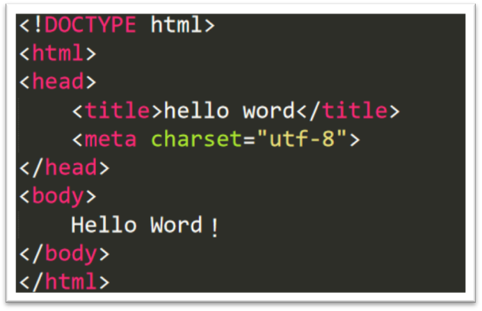

准备工作：
- 浏览器（火狐开发版、Chrome、IE等），用来查看效果；
- 编辑器（记事本、sublime3、webstorm），用来编写代码；
课程内容：
- HTML5简介；
- 网页的基本结构（元素、四大元素head、title、meta、body）；
- 基本的HTML结构
- HTML5简介
HTML（超文本标记语言），用于描述网页的内容，当前最新版本是HTML5。
- 网页的基本结构
例子：Hello Word

图2-1
网页由两部分组成：头部（head）和主体（body），头部部分用来描述网页文档的信息。主体部分用来描述可显示的网页内容。
头部一般包括以下部分：
- title：网页的标题；
- meta：网页元信息，例如：编码格式、关键字等；
- script:用来引入外部脚本文件（后面详细讲解）
- link：用来引入外部样式文件（后面详细讲解）。
<!DOCTYPE html> 用于告诉浏览器，这是一个html5文档。
html 是根标签，用来包含其他元素。
主体用于显示文本和元素。
学到了什么？
- 在HTML中，多个空格会当作一个空格。
- 回车、Tab（制表符）
- 不识别的标签，浏览器会简单的忽略或者像普通文本一样显示（不同的浏览器表现不同）
- <!--这是注释--> 浏览器不会显示<-- 和 --> 之间的内容，注释一般是为代打添加解释信息；
- H5中的元素
容器类：
HTML中用元素来代表要显示的内容。
例子：普通页面的构成：


页头：一般用来放置网站的logo、导航等内容
侧边栏：放一个较为次要的信息。
主要内容区：放置页面的主要内容。
页脚：放置版权、联系方式、相关链接等信息。
代码实现：
<!DOCTYPE html>
<html>
<head>
<title>布局实现</title>
<meta charset="utf-8">
</head>
<body>
<header>
这是页眉
</header>
<aside>这是左侧边栏</aside>
<main>
这是主要内容区
</main>
<aside>这是右侧边栏</aside>
<footer>
这是页脚
</footer>
</body>
</html>
- header元素：通常用来包含页面中介绍性或导航性的内容区域。一个页面中header的数量没有限制。
- 导航性内容。
<header>
<nav>
<ul>
<li>HTML/CSS</li><li>JavaScript</li>
</ul>
</nav>
</header>
- 介绍性内容。
<header>
<p>常见问题：</p>
<nav>
<ul>
<li>1、常见问题1</li>
<li>2、常见问题2</li>
</ul>
</nav>
</header>
- nav 元素：用来表示页面的导航区域。
- main元素：页面的主要区域，该元素在一个页面中，只能使用1次。
- aside元素：用来表示页面中的与主体内容相关性不强的次要信息。
- section元素：对具有相似主题的内容进行分组。
<section>艺术</section>
<section>科学</section>
- aiticle元素：除了表示文章外，还可以表示文档、页面、应用中一个独立容器：帖子、博客的条目、评论等。（独立的、可再分配的）
- footer元素，一般用在页面的底部，放置相关链接、法律条文信息。
- div元素：通用容器元素，在无法确定用何种容器的时候，可以选择使用div，该容器没有任何语义。
内容类：
- 文本
- 文章的标题：h1-h6；案例：文章大纲
- 段落：<p></p>，案例：1一篇文章
- 细则旁注：<small></small>,通常包括免责声明、注意事项、法律限制、版权信息等。注意：small通常包含小的短语，而不是包含大段文本。
如：< footer role=" contentinfo"> < p>< small>& copy; 2013 The Super Store. All Rights Reserved. </ small></ p> </ footer>；
- 重要文本和强调文本：strong用来表示重要的事情，em用来强调。例如：
<p><strong>周一上午九点，<em>33教学楼</em>开会~</strong></p>
- 带标题的图：<figure></figure>
<figure>
<figcaption>
图片的标题
</figcaption>
<img src="./pict.jpg">
</figure>
- 引用或参考：cite，如：戏剧、脚本或图书的标题
- 引述文本：blockquote元素，用于引述更长的内容。<blockquote></blockquote>
- 指定时间：time元素。Time元素可以包含datetime属性，该属性是为机器准备的。 <time datetime=”2018-09-01”>2018年9月1日</time>
- 缩写词：abbr元素。<abbr title=”National Football League”>NFL</abbr>
- 上标和下标：比主体文本偏高或偏低的文字，通常用于商标符号和脚注等。<sup></sup>(上标)或<sub></sub>（下标）
- 预格式化的文本：<pre></pre>预格式的文本可以保持固有的换行和空格。
- 突出显示文本。类似于期末复习时，用荧光笔标记出关键词,作用在于引起注意。<mark>html5</mark>
- 换行：<br />
- 通用文本：span，同div一样，没有任何语义，不同的是，div是块级元素，span用于字词。
- 图像
<img src=”图像地址” />
图像地址可以是相对路径也可以是绝对路径。
相对路径：相对于当前文件的路径。./ 代表当前文件所在目录; ../ 代表上级目录。
{kind=link}
Alt 属性，为图像添加一段描述性文本，当图像不显示时，就会显示这段文字。、
Width属性：为图像指定宽度；
Height属性：为图像指定高度； <img src=”” height=”20” width=”11” />
- 链接
链接：通过链接，我们可以在互联网中进行跳转。
- 指向另一个网页的链接。
<a href=”./html.html”>跳转</a>
<a href=”./xxx.html”><img src=”” /></a>
Target 属性,用于指定在哪个窗口中打开页面。Target=”__blank”,打开新的标签页
- 创建锚点
<a href=”#q1”>跳到页面指定位置</a>
<p id=”q1”>这是段落2</p>
- 其他类型的链接：
<a href=”tel:123232”>拨打电话</a>
- 列表
（1）有序列表和无序列表
有序列表用来表示有顺序关系的排列；
无序列表用来表示无顺序关系的排列；
<ol>
<li>第一名 张三</li>
<li>第二名 李四</li>
<ol>
（2）列表的嵌套
<ul>
<li>一级栏目<ul><li>二级栏目</li></ul></li>
</ul>
- 描述列表dl，用于描述专有术语。Dt用来表示术语，dd用来展示术语。
<dl>
<dt>老司机</dt>
<dd>老司机，网络名词。意为行业老手，对各种规则、内容以及技术、玩法经验老道的人，带有褒义。</dd>
<dt>持久化</dt>
<dd>持久化是将程序数据在持久状态和瞬时状态间转换的机制。通俗的讲，就是瞬时数据（比如内存中的数据，是不能永久保存的）持久化为持久数据</dd>
</dl>
- 表单
像生活中我们填写问卷一样，表单用于收集用户的数据。例如注册页面就是用表单来完成收集用户输入数据的。凡是需要用户数据的地方就需要表单。
- 创建表单
<form method=”get/post” action=”url”>
</form>
Method：告诉浏览器，该表单的数据使用何种方法提交。Get、post
Action：告诉浏览器，表单的数据交给谁来处理。
（2）fieldset， 当表单中的数据比较多时，使用fieldset对数据进行分组。
<form>
<fieldset>
<h1>zhehsi</h1>
</fieldset>
<fieldset>
<h1>主体</h1>
</fieldset>
</form>
(3)输入文本：input元素
<input type=”text” name=”” value=”” />
Type:表示接收的数据类型
Name：服务器端获取的名称
Value：值
Palceholder：没有输入时的内容。
Required=“required” 必填项
Autofocus=”autofocus” ,自动获取焦点
- 为表单组件添加说明标签： label
<label for=”username”>用户名</label><input id=”username” type=”text” name=”username” />
(6) 创建密码框
<input type=”password” />
(7) 创建电子邮件狂、搜索框、电话框和URL框
Type=”email”、Type=”search”、 Type=”tel”、 Type=”url”
Pattern属性：使用正则表达式表示文本格式，用来验证输入文本的格式是否正确。
注意：这些功能只是为创建网站提供了便利，在服务器端的验证还是很有必要的。
（8）单选框 type=’radio’
<p>
< input type=" radio" id=" gender- male" name=" gender" value=" male" />
< label for=" gender- male"> Male</ label>
</ p>
<p>
< input type=" radio" id=" gender- female" name=" gender" value=" female" />
< label for=" gender- female"> Female </ label>
</ p>
（9）复选框 type=’checkbox’
<p>
< input type=" checkbox" id="1" name="checkbox[]" value=" user- emails" />
< label for="1"></ label>
</ p>
<p class=" row">
<input type=" checkbox" id="2" name=" checkbox []" value="occasional- updates" />
< label for="2"></ label>
</ p>
Checked 或 checked=” checked”,设置为默认选中状态。
(10) 文本区域
<textarea cols=”20” rows=”5”></textarea>
Cols 和 rows 用来控制高度和宽度。
（11）创建选择框
<select name=”” >
<option value=””></option>
</select>
Selected=“selected”，用来指定默认选项；
在select标签里添加 Multiple=”multiple” ,可以按住ctrl 进行多选。
Optgroup 对选项进行分组。

（12）文件上传
<form enctype=”multipart/form-data”>
<input type=”file” name=”” />
</form>
(13)隐藏字段
<input type=”hidden” name=”” />
(14) 创建按钮
<input type=”submit” />
<input type=”reset” />
<input type=”button” />
<input type=”imge” src=”url” />
<button type=”submit”></button> //可以在元素间放置文字或图片，更加灵活。
- 禁用表单元素
Readonly = “readonly” 属性让组件变得只读。
disabled = “disabled“ 属性用来禁用组件。
- 为不同状态的元素设置不同的样式，在css3部分讲解。
- 视频、音频、其他多媒体
<video src=”url” width=”” height=”” autoplay controls ></video>
<audio src=“” controls ></audio>
- 表格
<table>
<caption>表格的标题</caption>
<thead>
<tr>
<th>列标题</th>
<th>列标题</th>
<th>列标题</th>
</tr>
</thead>
<tbody>
<tr>
<td></td>
</tr>
</tbody>
<tfoot>
<tr>
<td></td>
</tr>
</tfoot>
</table>
跨行：colspan
跨列：rowspan

border-collapse: collapse;/*去除表格双边框*/